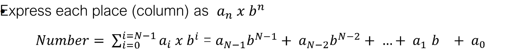
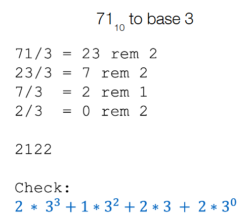
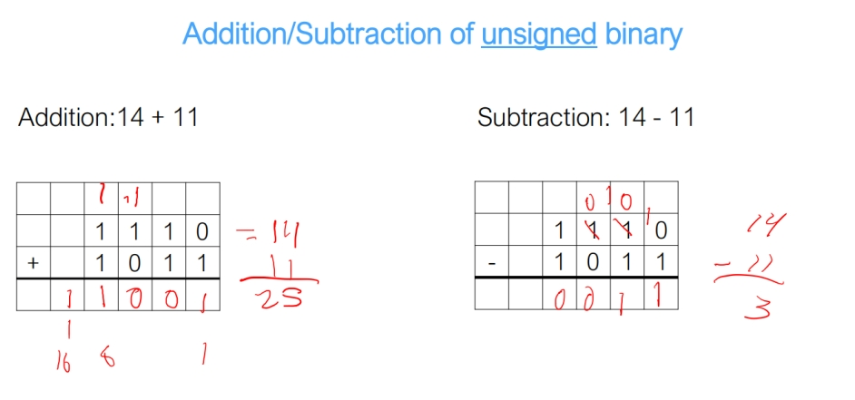
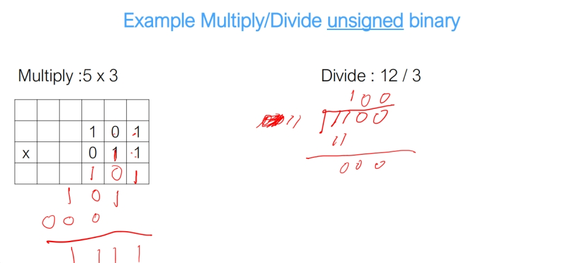
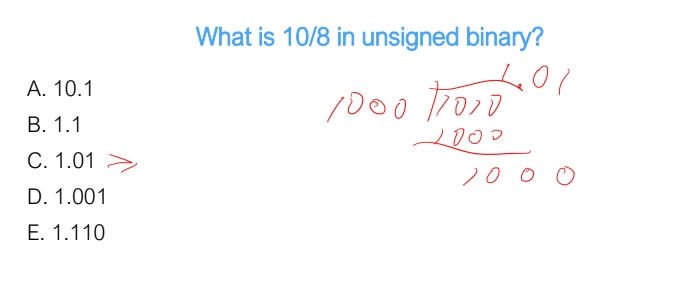
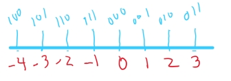
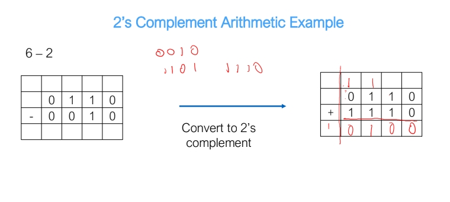
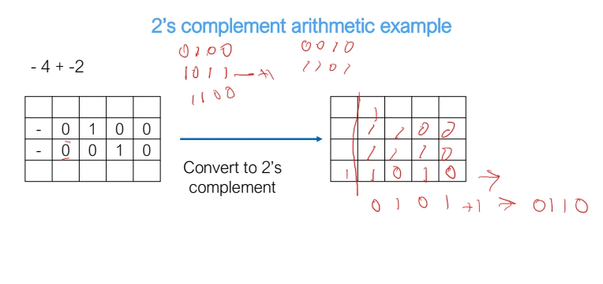
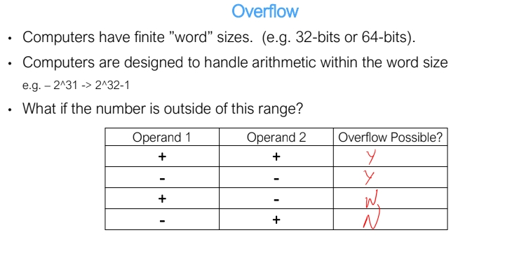
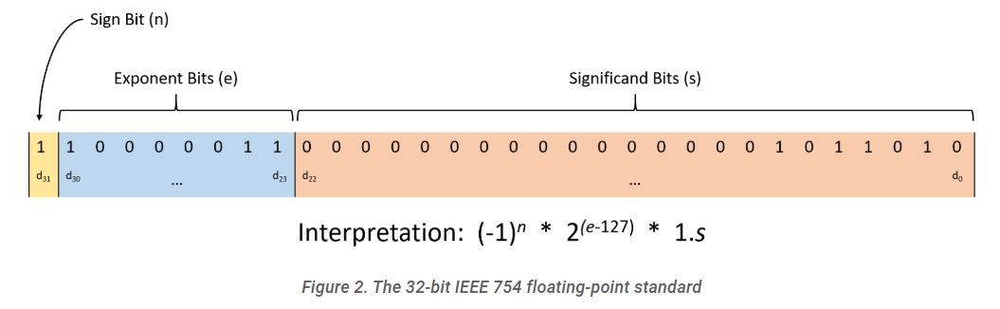

Homework 0 Contents
topics include binary number representation and base conversion, unsigned numbers, fractions, 2's complement, overflow, fixed point representation, IEEE 754 standard.
Binary Number Representation and Base conversion
- convert different bases formula 
- converting base 2 floating point decimal to base 10:
- 10001.11 -> 2^4 + 2^0 + 2^-1 + 2^-2 = 17.75
- binary range:
- with X bits, we can enumerate 2^X unique numbers
- largest base we can work in with symbols of length X:
- X length strings need bases of X to represent
- convert hex to binary
- 0x51 = 0b 1001 0001
- from binary to hex, group 4 of them as one and convert each group to the corresponding hex digit 0,1,2,3,4,5,6,7,8,9,,A,B,C,D,E,F.
- most significant bit is the left most bit, least significant bit is the right most bit
- shift:
- times 2 -> left shift by 1 bit
- divided by 2 -> right shift by 1 bit
- Convert from base 10 to any base 
Unsigned numbers
- unsigned binary to decimal, just treat the most significant bit as positive and add them up
- 11111100 = 11111100 = (1*2^7) + (1*2^6) + (1*2^5) + (1*2^4) + (1*2^3) + (1*2^2) + (0*2^1) + (0*2^0) = 252
- unsigned binary to hex, just group them by 4
- 00011101 to hex, 0001 = 1, 1101 = D, 00011101 = 1D.
- Unsigned Addition/Subtraction/Multiplication/Division  
Fraction
- Fraction division: 
2's complement
- X bits 2's complement representation can represent -2^(n-1) to 2^(n-1) - 1
- for example , 3 bits can represent 
- convert -25 to 6 bit 2's complement representation:
- 25 in binary is 011 001
- take 2's complement -> flip 1 to 0, 0 to 1, then finally add 1, we get 100 110, plus 1 to be 100 111(final result)
- From 2's complement to decimal, treat the most significant bit as negative
- Given 100 111, it's 1*2^0 + 1*2^1 + 1*2^2 + 0*2^3 + 0*2^4 - 1*2^5 = -25
- 2's complement subtractions
- convert negative numbers to 2's complement representation, and use addition  
Overflow
- Addition: if two numbers have the same sign(most significant bits are the same), and carry in does not equal to carry out, then it overflows 
- Subtraction: does not overflow
Fixed point representation(Unsigned)
- 100.101, 100 = 4, 101 = 5, 100.101 = 4.5
- 4.5, 4 = 100, 5 = 101, 4.5 = 100.101
IEEE 754 standard
- Rules:

- The low-order 23 bits (digits d22 through d0) represent the fraction part
- The next eight bits (digits d30 through d23) represent the exponent
- The final high-order bit (digit d31) represents the sign bit, positive is 0, negative is 1
- It's always 1 point something, so no need to record
- Example of 0b11000001101101000000000000000000
- Fraction portion: 01101000000000000000000, which represents 2^-2 + 2^-3 + 2^-5 = 0.40625
- The exponent is 10000011 = 131, so it's 2^(131-127) = 2^4
- Signed bit is 1
- Result in 0b11000001101101000000000000000000 = -1.40625 * 2^4 = -22.5